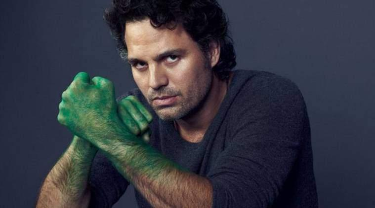

Salah satu karakter superhero Avengers yang akan tampil di Infinity War dan patut ditunggu aksinya adalah Hulk alias Dr. Bruce Banner. Meskipun begitu, pada faktanya ketika Bruce Banner menjadi dirinya sendiri ia hanyalah seorang ilmuwan yang pintar bahkan cenderung penakut. Sementara itu, ketika sudah berubah menjadi Hulk, tim superhero Avengers yang satu ini memiliki tubuh yang kuat, sangat mudah marah dan tangguh menghadap musuh-musuhnya. Namun, meskipun terkesan garang, Hulk sebenarnya adalah karakter yang lembut dan pelukable bagi teman-temannya.
Apalagi ketika Hulk berada di tengah hujan. Masih tidak percaya? Berikut beberapa fakta kalau Hulk itu merupakan sosok karakter yang lembut dan tidak seganas ketika dirinya marah. Film perkenalan Hulk sebagai karakter superhero Avengers dimulai pada tahun 2003. Saat itu Eric Bana, yang memerankan karakter Dr. Bruce Banner alias Hulk. Pada saat film perdananya, karakter Hulk memang sangat ganas dan sangat mudah marah
Namun, Hulk merupakan sosok yang sangat peduli dan sayang dengan orang-orang yang dicintainya. Salah satunya adalah kekasihnya di film tersebut yaitu Betty Ross yang diperankan oleh Jennifer Connelly. Tubuhnya yang besar menjadikan seorang Hulk merupakan sosok yang pelukable alias seorang teman pria yang nyaman untuk dipeluk. Meskipun di dalam filmnya Hulk jarang sekali menjadi sosok yang pelukable, namun dipastikan sosoknya yang besar menjadi tempat bersandar yang tepat ketika para superhero Avengers sudah kelelahan ketika bertarung.
Kalau Dr. Banner sudah berganti peran menjadi Hulk, kesannya sang raksasa hanya bertarung sesuka hatinya. Namun, semua itu dipatahkan Hulk sejak film The Avengers pada tahun 2012 yang lalu. Hulk dengan sukarela datang dan menjemput Iron Man yang sedang jatuh dari langit. Selain itu kamu juga bisa melihat sendiri penampilannya bersama Thor di film Thor: Ragnarok. Hulk dengan sukarela membantu Thor menghadapi Hela yang ingin menguasai Asgard.
Hulk yang ganas bisa menjadi “jinak” dan tenang jika seseorang sayang dan benar-benar peduli dengan dirinya. Kamu tentunya masih ingat dengan lagu “nina-bobo” dari Natasha Romanoff (Black Widow) yang membuat Hulk bisa langsung menjadi sangat tenang ketika sedang ganas bertarung.Satu lagi, yang menjadikan Hulk sebagai karakter superhero Avengers yang gak boleh dilupakan adalah karakter ini tidak pernah membunuh lawan-lawannya. Gaya bertarungnya memang brutal, namun Hulk tidak pernah benar-benar mematikan lawan bertarungnya.